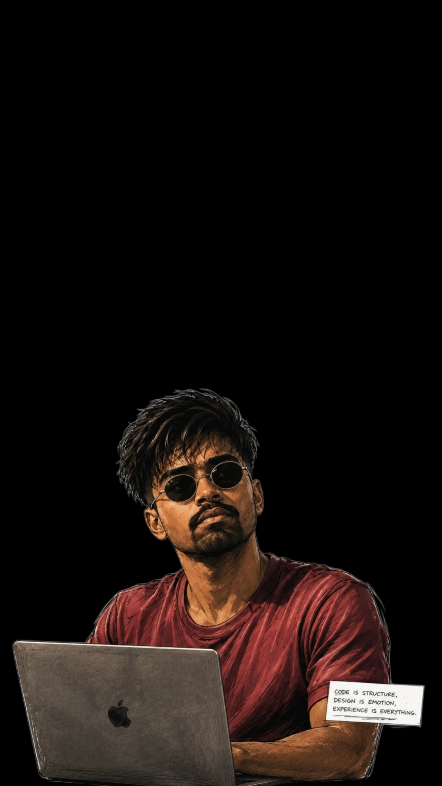

Leading lines vs. diagonal
Leading lines: viewer ki nazar ko subject tak le jao. Diagonal: movement, tension ya energy add karo. Road par dono ek saath bhi kaam kar sakte hain — decide karo primary effect kya hai.
Cinematic photography, composition grids aur camera angles — practical Hinglish lessons ke saath. Apni image upload karo, grid ko adjust karo, aur frame ko director ki tarah study karo.
Apni photo upload karo, phir recommended grid aur related options ko slider se usi image par compare karo. Grid visual guide hai; automatic eye detection nahi.

Rule of Thirds: thirds intersections ko subject placement ke starting points ki tarah use karo.
Eye grid tip: “Portrait Eye Line” mein upper horizontal guide ko eyes ke approximate level par align karne ke liye image framing/crop adjust karo. Tool face ya eyes ko detect nahi karta; grid ko manually interpret karo.
Slider move karo: selected grid isi uploaded photo par live apply hoga. Neeche related grid examples bhi compare kar sakte ho.
Grid guide hai; best composition scene aur subject par depend karti hai.
Upload ke baad image par recommended grid aur related grid options isi jagah compare honge. Browser sirf colour/brightness clues se scene ka andaaza lagata hai — exact grid ya face ko AI ki tarah detect nahi karta. Dropdown se scene choose karo; preview slider aur neeche thumbnails turant update honge.
Photo upload karte hi image ke visual signals analyze honge aur useful grid options milenge.
Note: colour/brightness analysis clues deta hai; scene dropdown ko correct karne se recommendations zyada relevant hongi.
Market, jungle, cafe, railway station ya kisi bhi common location ke liye shot ideas, camera angle aur framing dekho.
Location aur mood choose karke shot list banao.
Loading lessons…
Apna scene aur desired mood choose karo. Tool aapko angle, grid aur background-cleanup ka reason dega — random result nahi.
Use these as a shooting checklist.
Leading lines: viewer ki nazar ko subject tak le jao. Diagonal: movement, tension ya energy add karo. Road par dono ek saath bhi kaam kar sakte hain — decide karo primary effect kya hai.
Low angle: subject ko powerful ya larger-than-life feel de sakta hai. Eye-level: natural aur relatable. Dono shoot karo; background mein head ke peeche poles ya bright patches check karo.